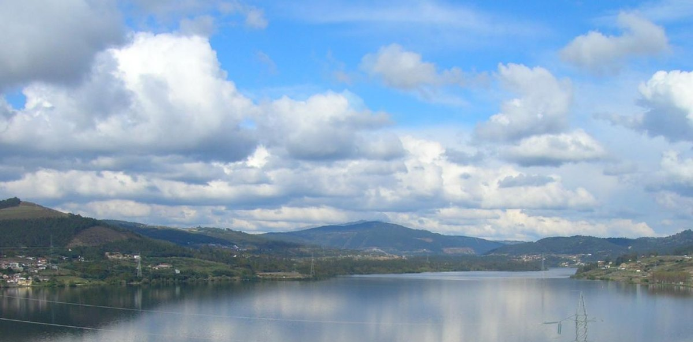
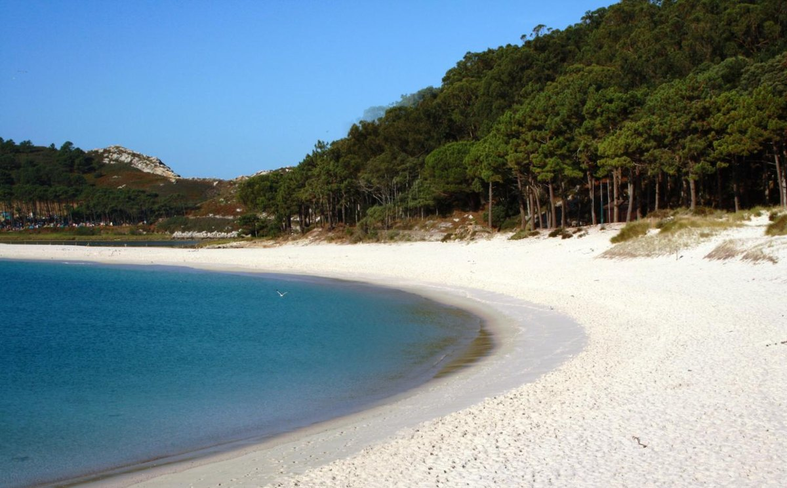
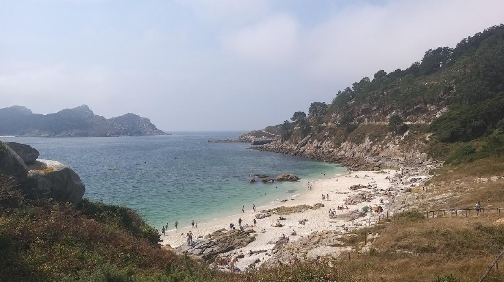
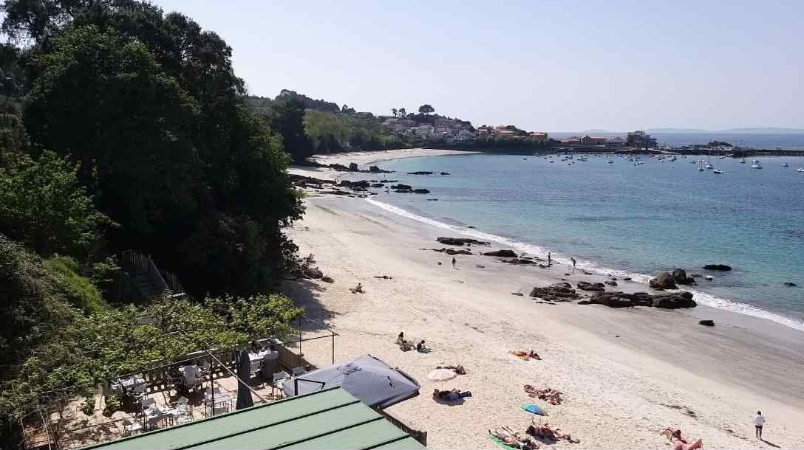
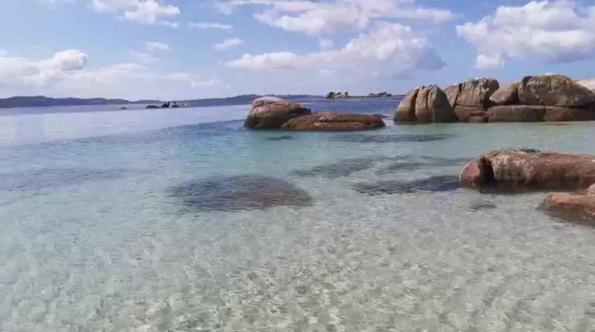
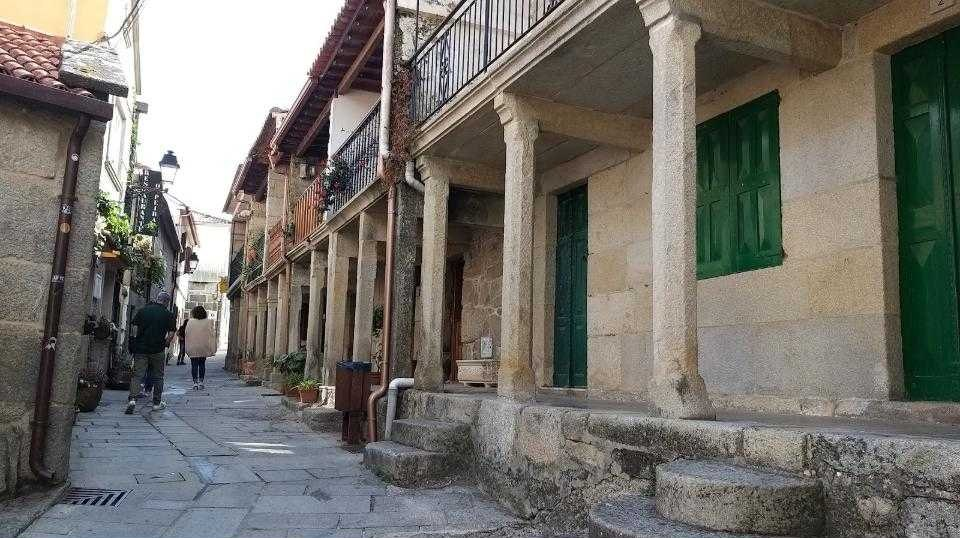
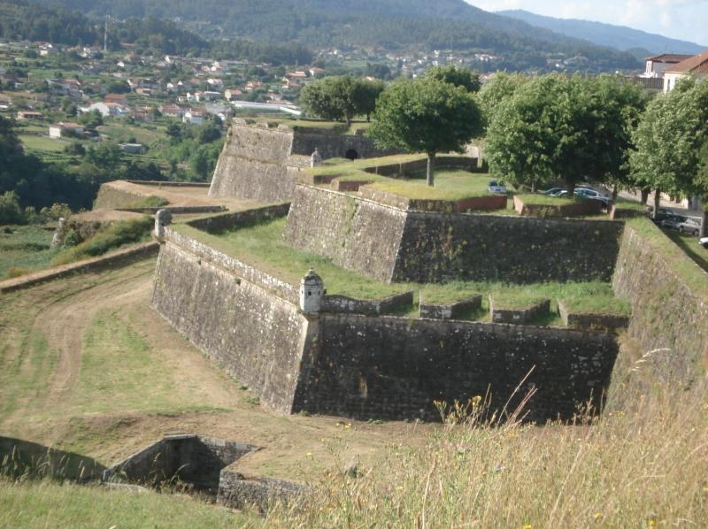
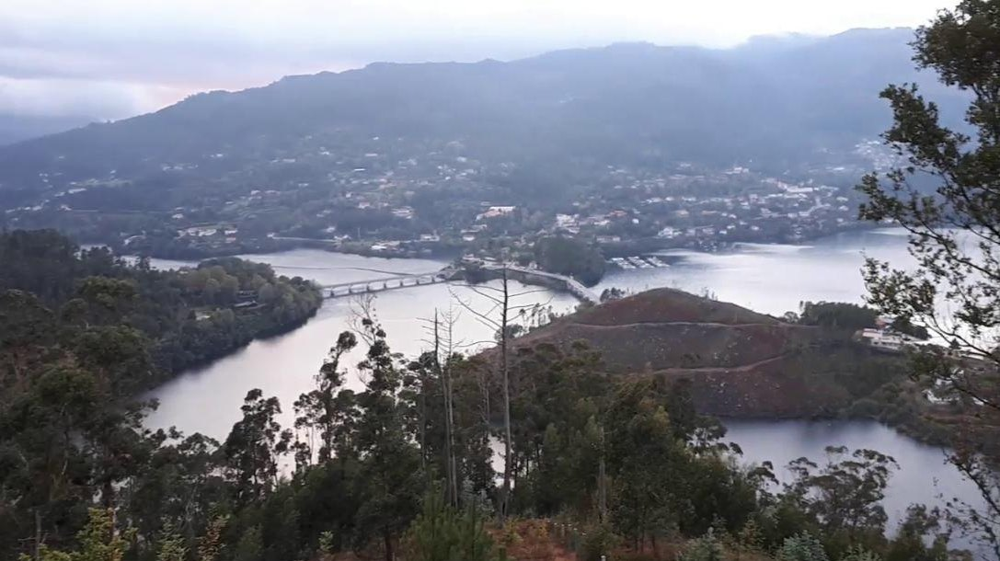
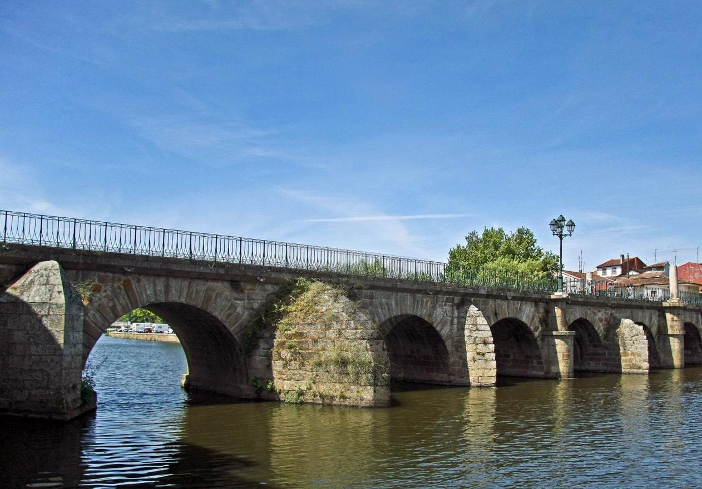

Pulsa en el nombre de cada ruta para ver su galería de fotos y vídeos.

Foto: José Antonio Gil Martínez (CC BY 2.0), Wikimedia Commons
Abrir en Google Maps

Foto: 2008dago21 (CC BY-SA 3.0), Wikimedia Commons





Foto: caocosta (dominio público), Wikimedia Commons


Foto: Vitor Oliveira (CC BY-SA 2.0), Wikimedia Commons